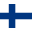
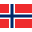
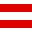
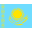
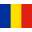

{kind=link}
Piotr Żyła
Piotr Paweł Żyła (ur. 16 stycznia 1987 w Cieszynie) – polski skoczek narciarski, zawodnik klubu WSS Wisła, reprezentant Polski, olimpijczyk z Soczi 2014, Pjongczang 2018 oraz z Pekinu 2022.
Zdobywca siedmiu medali mistrzostw świata – dwóch złotych (2021 i 2023) i brązowego (2017) w konkursach indywidualnych oraz złotego (2017) i trzech brązowych (2013, 2015 i 2021) w konkursach drużynowych. Dwukrotny drużynowy brązowy medalista mistrzostw świata w lotach narciarskich (2018 i 2020). Drużynowy wicemistrz świata juniorów z 2005.
Drugi zawodnik 65. Turnieju Czterech Skoczni. Trzeci zawodnik Letniego Grand Prix 2018. W konkursach indywidualnych Pucharu Świata był 22 razy na podium (w tym dwukrotnie na 1. miejscu).
Były rekordzista Polski w długości skoku narciarskiego. Wielokrotny medalista mistrzostw Polski, w tym pięciokrotny indywidualny mistrz (dwa tytuły zimą i trzy latem). Swój rekord życiowy (248,0 m) ustanowił 24 marca 2019 na Letalnicy w Planicy.
Sezon 2005/2006
21 stycznia 2006 w Sapporo dostał szansę debiutu w Pucharze Świata. Już w swoim pierwszym starcie zdobył punkty, zajmując 19. miejsce. Dzień później ponownie, po raz ostatni w sezonie 2005/2006, znalazł się w czołowej trzydziestce. 4 lutego zwyciężył w zawodach Pucharu Kontynentalnego w Villach.
|  |  |  | |  |  | |  |  | | |  | | Punkty | |||||||||
|---|---|---|---|---|---|---|---|---|---|---|---|---|---|---|---|---|---|---|---|---|---|---|
| - | - | - | - | - | - | - | - | - | - | - | 19 | 20 | 47 | q | - | - | - | - | - | q | - | 23 |
Sezon 2006/2007
W sezonie 2006/2007 czterokrotnie zdobywał punkty PŚ. Najwyższym zajętym przez Żyłę miejscem w tym cyklu było dziewiętnaste z Titisee-Neustadt. Wystartował również na Mistrzostwach Świata w Narciarstwie Klasycznym 2007. W zawodach indywidualnych zajął 35. (skocznia duża) i 42. (skocznia normalna) miejsce, zaś w konkursie drużynowym reprezentacja Polski z Żyłą w składzie była piąta.
| | | | | | | | | | | | | | Punkty | ||||||||||
|---|---|---|---|---|---|---|---|---|---|---|---|---|---|---|---|---|---|---|---|---|---|---|---|---|
| 32 | - | q | - | - | - | - | - | - | - | q | - | - | 42 | 19 | 20 | - | 27 | q | 24 | 33 | q | q | - | 34 |
Sezon 2007/2008
We wrześniu 2007 zajął 8. miejsce w zawodach Letniego Grand Prix w Hakubie. W kolejnych latach osiągał słabsze wyniki. W sezonie 2007/2008 nie zdobył punktów Pucharu Świata. Wystąpił na Mistrzostwach Świata w Lotach Narciarskich 2008, gdzie wraz z reprezentacją Polski w konkursie drużynowym zajął 10. miejsce.
| | | |  | | | | | | | | | | Punkty | |||||||||||||
|---|---|---|---|---|---|---|---|---|---|---|---|---|---|---|---|---|---|---|---|---|---|---|---|---|---|---|---|
| 44 | - | - | - | - | 47 | q | - | - | - | - | - | - | - | q | q | 38 | 45 | - | - | - | 49 | 49 | q | 45 | 39 | - | 0 |
Sezon 2008/2009
W sezonie 2008/2009 dwukrotnie zajął 29. miejsce w Pucharze Świata w Zakopanem.
| | | | | | | |  | | | | | | | Punkty | ||||||||||||
|---|---|---|---|---|---|---|---|---|---|---|---|---|---|---|---|---|---|---|---|---|---|---|---|---|---|---|---|
| - | - | - | - | - | 44 | q | 34 | 41 | 46 | 36 | - | - | 29 | 29 | q | - | 38 | - | - | - | - | - | - | - | - | - | 4 |
Sezon 2009/2010
Po słabym początku sezonu 2009/2010 został odsunięty od startów w PŚ. Również w Pucharze Kontynentalnym nie osiągał dobrych wyników, tylko raz awansując do drugiej serii.
| | | | | | | | | | Punkty | |||||||||||||
|---|---|---|---|---|---|---|---|---|---|---|---|---|---|---|---|---|---|---|---|---|---|---|---|
| q | q | 42 | - | - | - | - | - | - | - | - | - | - | - | - | - | - | - | - | - | - | - | - | 0 |
Sezon 2010/2011
Nie znalazł się w kadrze A polskich skoczków narciarskich w sezonie 2010/2011. Treningi w klubie, prowadzone pod nadzorem Jana Szturca zaowocowały lepszymi wynikami w Pucharze Kontynentalnym. Począwszy od zawodów w Sapporo Żyła rozpoczął regularne starty w Pucharze Świata. 21 stycznia w Zakopanem zajął 21. miejsce, wynik ten powtórzył 13 lutego na skoczni mamuciej w Vikersund. 29 stycznia 2011 roku stanął na najniższym stopniu podium w konkursie drużynowym w Willingen. Wystąpił też na Mistrzostwach Świata w Narciarstwie Klasycznym 2011. Na skoczni normalnej zajął 19. miejsce indywidualnie i 4. drużynowo, a na dużej – 21. indywidualnie i 5. drużynowo.
| | | | | | | | | | | | | | | Punkty | |||||||||||
|---|---|---|---|---|---|---|---|---|---|---|---|---|---|---|---|---|---|---|---|---|---|---|---|---|---|---|
| - | - | - | - | - | - | - | - | - | - | - | - | - | 31 | 26 | 21 | 32 | 31 | 31 | 46 | 27 | 31 | 21 | 28 | 26 | - | 37 |
Sezon 2011/2012
W sezonie 2011/2012 Żyła powrócił do kadry A. W klasyfikacji generalnej rozpoczynających sezon letni zawodów Lotos Poland Tour zajął ostatnie, 57. miejsce. Na zawodach Letniego Grand Prix 2011 w Hakubie dwukrotnie zajął drugą pozycję. Po zajęciu 4. miejsca w Letnim Grand Prix w Klingenthal zapewnił sobie 5. pozycję w klasyfikacji generalnej cyklu.
Przez cały sezon zimowy 2011/2012 startował w zawodach Pucharu Świata, zajmując głównie miejsca w drugiej dziesiątce. 4 grudnia 2011 po raz pierwszy w karierze uplasował się w pierwszej dziesiątce, zajmując 7. miejsce w Lillehammer. Wziął udział w Mistrzostwach Świata w Lotach Narciarskich 2012 na skoczni w Vikersund. Indywidualnie był 33., w drużynie zajął 7. miejsce. 26 lutego 2012 podczas konkursu drużynowego ustanowił rekord życiowy wynoszący 232,5 m. Tym samym pobił rekord Polski w długości lotu, należący uprzednio do Adama Małysza. 11 marca w Oslo powtórzył wynik z początku sezonu, zajmując 7. miejsce w konkursie Pucharu Świata. W klasyfikacji generalnej cyklu znalazł się na 19. pozycji z 267 punktami.
| | | | | | | | | | | | | | Punkty | ||||||||||||
|---|---|---|---|---|---|---|---|---|---|---|---|---|---|---|---|---|---|---|---|---|---|---|---|---|---|---|
| 19 | 11 | 7 | 19 | 25 | 16 | 42 | 36 | 28 | q | 43 | 17 | 22 | 16 | 18 | 13 | 30 | 44 | 42 | 26 | 28 | 10 | 44 | 7 | 24 | 21 | 267 |
Sezon 2012/2013
W sezonie 2012/2013 Pucharu Świata pierwsze punkty zdobył dopiero w siódmym starcie, zajmując 30. pozycję w Garmisch-Partenkirchen. 9 stycznia 2013 w Wiśle zajął 6. miejsce. Wynik ten powtórzył 26 stycznia w Vikersund i 13 lutego w Klingenthal. Wystąpił na Mistrzostwach Świata w Narciarstwie Klasycznym 2013. W indywidualnych konkursach zajął 23. miejsce na skoczni normalnej i 19. na skoczni dużej. W zawodach drużynowych zdobył, wraz z Maciejem Kotem, Dawidem Kubackim i Kamilem Stochem, brązowy medal.
17 marca 2013 roku ex aequo z Gregorem Schlierenzauerem zwyciężył w zawodach Pucharu Świata w Oslo. Było to jego pierwsze podium w karierze. Został piątym w historii polskim skoczkiem po Stanisławie Bobaku, Piotrze Fijasie, Adamie Małyszu i Kamilu Stochu, który wygrał konkurs Pucharu Świata. Tydzień później w przedostatnim konkursie sezonu zajął trzecie miejsce na Letalnicy w Planicy, a na zakończenie był piąty. W klasyfikacji generalnej Pucharu Świata znalazł się na 15. miejscu z 485 punktami, Puchar Świata w lotach narciarskich 2012/2013 ukończył na 8. pozycji.
 | | | | | | | | | | | | | | Punkty | |||||||||||||
|---|---|---|---|---|---|---|---|---|---|---|---|---|---|---|---|---|---|---|---|---|---|---|---|---|---|---|---|
| 36 | 43 | 48 | - | - | 36 | 37 | 31 | 30 | 22 | 30 | 6 | 18 | 26 | 22 | 6 | 10 | 22 | 13 | 6 | - | 12 | 15 | 9 | 1 | 3 | 5 | 485 |
Sezon 2013/2014
Sezon 2013/2014 Pucharu Świata Żyła rozpoczął od 5. pozycji w Klingenthal, która okazała się być dla niego najlepszą w sezonie. Jeszcze dwukrotnie, w grudniu, zajmował miejsca w pierwszej dziesiątce, większość konkursów cyklu kończąc w drugiej i trzeciej. W klasyfikacji generalnej sezon ukończył na 20. pozycji z 343 punktami. Wystąpił na Zimowych Igrzyskach Olimpijskich 2014, zajmując 34. pozycję indywidualnie na skoczni dużej, a także 4. w drużynie.
| | | | | | | | | | |  | | | Punkty | ||||||||||||||
|---|---|---|---|---|---|---|---|---|---|---|---|---|---|---|---|---|---|---|---|---|---|---|---|---|---|---|---|---|
| 5 | 23 | 26 | 6 | 12 | 15 | 6 | 11 | 24 | q | - | 21 | 15 | 24 | 12 | 19 | - | - | 22 | 32 | 37 | q | q | 24 | 12 | 32 | 20 | 13 | 343 |
Sezon 2014/2015
Dwukrotnie stawał na podium Letniego Grand Prix 2014, zajmując 2. miejsce w Wiśle i Einsiedeln. Wystąpił we wszystkich konkursach Pucharu Świata 2014/2015. Indywidualnie siedmiokrotnie kończył je w pierwszej dziesiątce, głównie w drugiej połowie sezonu. Najwyżej znalazł się na 6. miejscu, 14 marca w Oslo. W klasyfikacji generalnej znalazł się na 19. miejscu z 474 punktami. Na Mistrzostwach Świata w Narciarstwie Klasycznym 2015 indywidualnie był 33. na skoczni normalnej i 9. na dużej, natomiast w drużynie, wraz z Klemensem Murańką, Janem Ziobrą i Kamilem Stochem, zdobył brązowy medal.
| | | | | | | | | | | | | | | Punkty | ||||||||||||||||
|---|---|---|---|---|---|---|---|---|---|---|---|---|---|---|---|---|---|---|---|---|---|---|---|---|---|---|---|---|---|---|---|
| 14 | 17 | 24 | 33 | 15 | 10 | 46 | 24 | 15 | 26 | 17 | 13 | 33 | 8 | 29 | 27 | 16 | 11 | 23 | 14 | 9 | 18 | 12 | 15 | 18 | 10 | 20 | 6 | 8 | 41 | 10 | 474 |
Sezon 2015/2016
Na przełomie lipca i sierpnia 2015 zwyciężył w konkursie drużynowym oraz zajął 2. miejsce indywidualnie w zawodach rozgrywanych w Wiśle w ramach Letniego Grand Prix 2015. W sezonie 2015/2016 Pucharu Świata osiągał gorsze wyniki niż w poprzednich sezonach. W większości swoich startów nie zdobył punktów, najwyżej sklasyfikowanym będąc na 12. pozycji. Występował też w Pucharze Kontynentalnym, raz zajmując 3. miejsce.
| | | | | | | | |  | | | | | | Punkty | ||||||||||||||
|---|---|---|---|---|---|---|---|---|---|---|---|---|---|---|---|---|---|---|---|---|---|---|---|---|---|---|---|---|---|
| 39 | 33 | 40 | 19 | 17 | 45 | 42 | 48 | - | - | - | - | 40 | - | - | - | 18 | 34 | 12 | 35 | 46 | 16 | 48 | 39 | 18 | 40 | 42 | q | - | 89 |
Sezon 2016/2017
Występy w Pucharze Świata 2016/2017 Żyła rozpoczął od miejsc w drugiej dziesiątce. W rozpoczynającym 65. Turniej Czterech Skoczni konkursie w Oberstdorfie był 7., następnie zajął 6. pozycję w Garmisch-Partenkirchen i 7. w Innsbrucku. Zawody w Bischofshofen ukończył na 3. miejscu – pierwszym na podium PŚ od 2013 – dzięki czemu w całym turnieju znalazł się na 2. pozycji, ustępując jedynie Kamilowi Stochowi. W styczniowych i lutowych zawodach Pucharu Świata zajmował głównie miejsca w pierwszej dziesiątce.
Wystartował na Mistrzostwach Świata w Narciarstwie Klasycznym 2017. Na skoczni normalnej zajął 19. miejsce, natomiast na skoczni dużej zdobył brązowy medal indywidualnie, a w drużynie, wraz z Dawidem Kubackim, Maciejem Kotem i Kamilem Stochem, zdobył pierwszy w historii reprezentacji Polski złoty medal. 18 marca podczas konkursów lotów narciarskich na Vikersundbakken dwukrotnie, skokami na odległość 243 oraz 245,5 m poprawiał rekord Polski. W marcowych zawodach Pucharu Świata najwyżej sklasyfikowany był na 7. miejscu. W klasyfikacji generalnej cyklu znalazł się na 11. pozycji z 634 punktami.
| | | | | | | | | | |  | | | | Punkty | |||||||||||
|---|---|---|---|---|---|---|---|---|---|---|---|---|---|---|---|---|---|---|---|---|---|---|---|---|---|---|
| 17 | 11 | 20 | 16 | 30 | 20 | 9 | 7 | 6 | 7 | 3 | 7 | 11 | 6 | 10 | 9 | 8 | 10 | 12 | 27 | 18 | 9 | 23 | 23 | 7 | 11 | 634 |
Sezon 2017/2018
Dwukrotnie stawał na podium konkursów indywidualnych Letniego Grand Prix 2017: w lipcu był 3. w Hinterzarten, a w październiku zajął 2. miejsce w Hinzenbach. W sezonie 2017/2018 Pucharu Świata regularnie zdobywał punkty. W najlepszym występie zajął 3. miejsce w konkursie w Willingen 4 lutego 2018. Poza tym jeszcze czterokrotnie, w zawodach rozgrywanych w listopadzie i grudniu 2017, zajmował miejsca w pierwszej dziesiątce. W klasyfikacji generalnej cyklu zajął 16. miejsce z 403 punktami.
Wystąpił na Mistrzostwach Świata w Lotach Narciarskich 2018. Indywidualnie zajął 17. pozycję, a w konkursie drużynowym, startując wraz z Stefanem Hulą, Dawidem Kubackim i Kamilem Stochem, zdobył brązowy medal. Znalazł się w składzie reprezentacji Polski na Zimowe Igrzyska Olimpijskie 2018, ale ostatecznie nie wystąpił w żadnym z konkursów.
| | | | | | | | | | | | | Punkty | |||||||||
|---|---|---|---|---|---|---|---|---|---|---|---|---|---|---|---|---|---|---|---|---|---|---|
| 7 | 11 | 10 | 16 | 19 | 10 | 7 | 25 | 25 | 14 | 23 | 17 | 28 | 13 | 3 | 16 | 19 | 14 | 12 | 12 | q | 27 | 403 |
Sezon 2018/2019
W Letnim Grand Prix 2018 trzykrotnie zajmował miejsca na podium zawodów indywidualnych: w lipcu był 2. w Wiśle, w sierpniu zwyciężył w Einsiedeln, a we wrześniu zajął 2. pozycję w Râșnovie. W klasyfikacji generalnej cykl zakończył na 3. lokacie.
W listopadowych i grudniowych zawodach sezonu 2018/2019 Pucharu Świata regularnie zajmował miejsca na podium. Był 3. w pierwszym konkursie w Ruce, 2. i 3. w Niżnym Tagile, a także dwukrotnie 2. w Engelbergu. W kolejnych tygodniach zajmował głównie lokaty w pierwszej i drugiej dziesiątce. Na przełomie stycznia i lutego 2019 w Sapporo i Oberstdorfie cztery razy z rzędu zajął 4. miejsce. 17 lutego 2019 zajął 3. pozycję w drugim z konkursów Willingen Five 2019. Cały turniej zakończył na 2. miejscu.
Wystąpił na Mistrzostwach Świata w Narciarstwie Klasycznym 2019. Indywidualnie zajął 19. miejsce na skoczni dużej oraz 33. na normalnej, zaś konkurs drużynowy ukończył na 4. pozycji. W marcowych konkursach Pucharu Świata raz stanął na podium, zajmując 3. lokatę w pierwszym konkursie w Planicy. Cały sezon ukończył na 4. miejscu w klasyfikacji generalnej ze 1131 punktami. Zajął też 3. pozycję w Pucharze Świata w lotach narciarskich 2018/2019.
| | | | | | | | | | | | | | | | | Punkty | |||||||||||
|---|---|---|---|---|---|---|---|---|---|---|---|---|---|---|---|---|---|---|---|---|---|---|---|---|---|---|---|---|
| 6 | 3 | 5 | 2 | 3 | 2 | 2 | 6 | 11 | 42 | 13 | 7 | 10 | 19 | 11 | 4 | 4 | 4 | 4 | 10 | 4 | 3 | 26 | 33 | 11 | 9 | 3 | 4 | 1131 |
Sezon 2019/2020
W ramach Letniego Grand Prix 2019 był 5. i 6. w konkursach rozgrywanych w Polsce, a także zajął 3. miejsce w zawodach w Hinzenbach i Klingenthal.
W pierwszym indywidualnym konkursie sezonu 2019/2020 Pucharu Świata, 24 listopada 2019 w Wiśle upadł po skoku w pierwszej serii i zajął 35. miejsce w zawodach. W wyniku upadku nie odniósł poważnych obrażeń. W dalszej części sezonu wielokrotnie zajmował miejsca w pierwszej dziesiątce zawodów cyklu. W grudniu najwyżej klasyfikowany był na 5. miejscu, w konkursie w Oberstdorfie w ramach 68. Turnieju Czterech Skoczni. Z kolei w styczniu 2020 w najlepszym występie, w drugim konkursie w Predazzo zajął 4. pozycję.
15 lutego 2020 na mamuciej skoczni w Bad Mitterndorf odniósł drugie w karierze indywidualne zwycięstwo w zawodach Pucharu Świata. Dzień później zajął 9. miejsce. W marcu najwyżej sklasyfikowany był na 6. lokacie w zawodach w Lahti. W klasyfikacji generalnej ukończył sezon na 11. miejscu z 617 punktami. Z kolei w Pucharze Świata w lotach narciarskich 2019/2020 znalazł się na 3. pozycji.
| | | | | | | | | | | | | |  | Punkty | ||||||||||||
|---|---|---|---|---|---|---|---|---|---|---|---|---|---|---|---|---|---|---|---|---|---|---|---|---|---|---|---|
| 35 | 13 | 24 | 35 | 9 | 8 | 33 | 5 | 15 | 12 | 27 | 7 | 4 | 9 | 8 | 8 | 8 | 21 | 35 | 1 | 9 | 9 | 21 | 37 | 6 | 23 | 26 | 617 |
Sezon 2020/2021
Zajął 3. miejsce w obu konkursach Letniego Grand Prix 2020 rozgrywanych w Wiśle. Na tej samej pozycji znalazł się w klasyfikacji generalnej cyklu.
W większości konkursów sezonu 2020/2021 Pucharu Świata zajmował miejsca w pierwszej dziesiątce. W listopadzie 2020 raz stanął na podium zawodów indywidualnych tego cyklu, zajmując 2. pozycję w Ruce. Wystąpił na Mistrzostwach Świata w Lotach Narciarskich 2020. Indywidualnie był 7., a w zawodach drużynowych, w których wystąpił wraz z Andrzejem Stękałą, Kamilem Stochem i Dawidem Kubackim, zdobył brązowy medal. W grudniowych konkursach Pucharu Świata najwyżej klasyfikowany był na 3. miejscu, w zawodach w Engelbergu. W styczniu 2021 trzykrotnie stawał na podium cyklu: był 3. w Garmisch-Partenkirchen i Titisee-Neustadt oraz 2. w Willingen. W lutym najwyżej klasyfikowany był na 4. miejscu, w zawodach w Klingenthal.
Wystartował na Mistrzostwach Świata w Narciarstwie Klasycznym 2021. W zawodach indywidualnych na skoczni normalnej zdobył złoty medal, o 3,6 punktu wyprzedzając drugiego Karla Geigera, zaś na skoczni dużej zajął 4. miejsce. W drużynie mieszanej był 6., zaś w zespole męskim, wraz ze Stękałą, Stochem i Kubackim, zdobył brązowy medal. W marcowych konkursach Pucharu Świata w Planicy najwyżej sklasyfikowany był na 7. pozycji. Sezon zakończył na 7. miejscu w klasyfikacji generalnej cyklu z 825 punktami.
| | | | | | | | | | | | | | | | | | | Punkty | ||||||
|---|---|---|---|---|---|---|---|---|---|---|---|---|---|---|---|---|---|---|---|---|---|---|---|---|---|
| 5 | 2 | 23 | - | - | 5 | 3 | 21 | 3 | 4 | 7 | 3 | 16 | q | 11 | 9 | 2 | 4 | 17 | 8 | 33 | 5 | 10 | 7 | 13 | 825 |
Sezon 2021/2022
W sezonie 2021/2022 Pucharu Świata najczęściej zajmował pozycje w drugiej dziesiątce. Pomiędzy listopadem 2021 a styczniem 2022 najwyżej w cyklu klasyfikowany był na 7. pozycji, w zawodach w Bischofshofen. Wystąpił na Zimowych Igrzyskach Olimpijskich 2022, gdzie indywidualnie był 21. na skoczni normalnej i 18. na dużej, a w drużynie męskiej zajął 6. miejsce.
W lutym 2022 po powrocie do startów w Pucharze Świata zajął 3. miejsce w konkursie cyklu rozgrywanym w Lahti. Wystartował na Mistrzostwach Świata w Lotach Narciarskich 2022, na których zajął 15. lokatę indywidualnie i 5. w drużynie. W marcowych zawodach Pucharu Świata raz stanął na podium – w drugim konkursie w Oberstdorfie zajął 2. pozycję. Sezon ukończył na 14. miejscu w klasyfikacji generalnej cyklu z 480 punktami.
| | | | | | | | | | | | | | | | | | Punkty | ||||||||||
|---|---|---|---|---|---|---|---|---|---|---|---|---|---|---|---|---|---|---|---|---|---|---|---|---|---|---|---|---|
| 32 | 16 | 23 | 27 | 25 | 17 | 14 | q | 15 | 38 | 11 | 18 | 13 | 7 | 17 | - | - | dq | 41 | 3 | 14 | 8 | 22 | 18 | 5 | 2 | 18 | 12 | 480 |